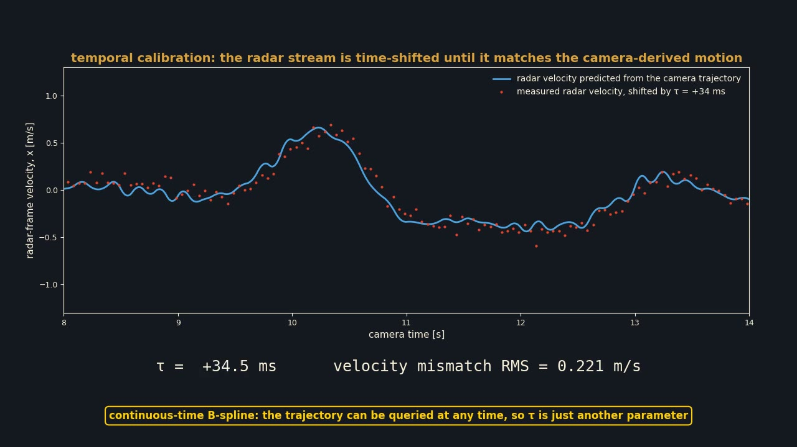
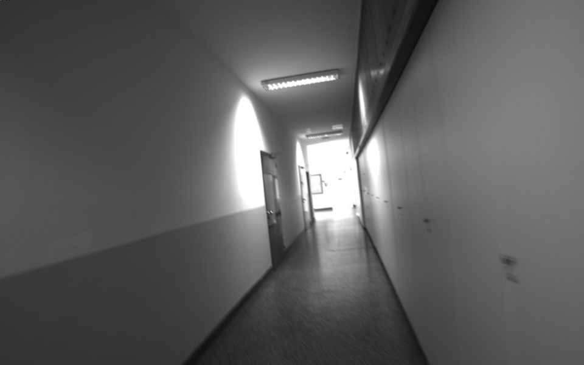

In one strip

One body, two clocks, two frames
Camera poses at 30 Hz, up to a scale α. Radar ego-velocities at 20 Hz, stamped τ late. The trajectory is a cumulative cubic B-spline on R³ × SO(3), so it can be queried at any instant and differentiated analytically.

τ is just another parameter
hj = Rcrᵀ ( Rwcᵀ ṗ + ω × r ) evaluated at tj + τ. A linear closed form on the paper's identifiability model gives Rcr, r, α and a τ grid search; sparse Levenberg–Marquardt over spline and parameters finishes the job.

The 2020 handheld recordings
TI AWR1843 radar, Point Grey Flea3, VectorNav IMU, walked through the corridors of FER Zagreb. The RANSAC front end validates 80 % of the scans and measures the radar noise the paper only assumed.